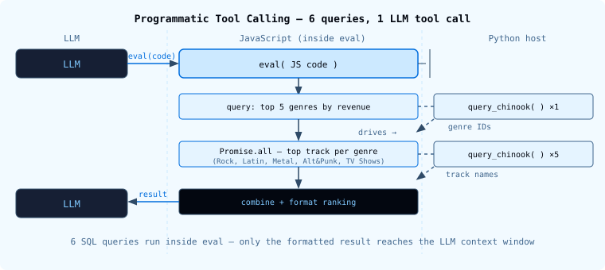

For translation, open lesson in new tab and use Chrome translate
Code execution is a powerful capability for agents. The previous lesson introduced sandboxes - isolated cloud environments where agents run arbitrary scripts, install packages, and access files. Sandboxes are the right tool when an agent needs Python libraries, a real filesystem, or persistent state across steps.
Interpreters are a lighter-weight alternative. They embed a JavaScript runtime directly in the agent process - no cloud infrastructure, no API calls to spin up an environment. The tradeoff is a narrower capability set: the JavaScript standard library only, no external packages, no filesystem, no network.
Unlike the other execution backends, the interpreter is not a backend service. It operates "in the loop" like other tools.
When CodeInterpreterMiddleware is added to an agent, it provides a single new tool: eval. The agent calls it with a string of JavaScript to execute.
eval(code="...")
The middleware runs the code in a QuickJS runtime - a lightweight JavaScript engine designed for embedded execution. The result of the last expression, plus any console.log output, comes back as the tool result.
// The agent writes JavaScript like this:
const prices = [0.99, 1.29, 0.99, 1.99, 0.99];
const avg = prices.reduce((a, b) => a + b, 0) / prices.length;
`Average price: $${avg.toFixed(2)}`
The string "Average price: $1.25" comes back as the tool result on the next LLM call.
QuickJS exposes the JavaScript standard library - and nothing else.
Available:
- Array methods: map, filter, reduce, sort, flat, find
- Map, Set, JSON, Math, Promise
- console.log (captured and returned as output)
- String and number methods, destructuring, async/await
Not available:
- Filesystem (fs)
- Network (fetch)
- System clock (Date.now() is sandboxed)
- Node.js APIs
- npm packages
The interpreter state persists across eval calls within the same thread. Variables defined in one call are available in the next.
There are three patterns where interpreters shine.
When the agent has data in context and needs to compute something - sort, group, aggregate, reformat - eval is faster and more reliable than asking the LLM to do arithmetic in prose.
const invoices = [
{month: "2024-01", total: 42.50},
{month: "2024-02", total: 38.75},
{month: "2024-03", total: 61.20},
];
const best = invoices.reduce((a, b) => a.total > b.total ? a : b);
`Best month: ${best.month} ($${best.total})`
This is the most powerful pattern. When PTC is enabled, the JavaScript code can call the agent's tools directly - without those intermediate results ever entering the LLM's context window.
// JavaScript drives multiple tool calls in a single eval()
const rows = JSON.parse(await tools.queryChinook({
sql: "SELECT Genre.Name, SUM(InvoiceLine.UnitPrice * InvoiceLine.Quantity) AS revenue FROM InvoiceLine JOIN Track ON InvoiceLine.TrackId = Track.TrackId JOIN Genre ON Track.GenreId = Genre.GenreId GROUP BY Genre.GenreId"
}));
const total = rows.reduce((s, r) => s + r.revenue, 0);
rows.sort((a, b) => b.revenue - a.revenue)
.map(r => `${r.Name}: ${(r.revenue / total * 100).toFixed(1)}%`)
.join("\n");
The model writes the JavaScript once. The interpreter executes it - calling the Python query_chinook tool on the host, receiving the JSON result, processing it - and returns only the final formatted string to the LLM. The raw database rows never touch the context window.
Tools are exposed as tools.<camelCaseName>(input) async functions. Results come back as strings; use JSON.parse() when the tool returns JSON.
Note: Only tools explicitly listed in the
ptc=allowlist are callable from JavaScript.
task toolWhen "task" is included in the PTC allowlist, JavaScript code can invoke subagents - combining their responses before returning a single result to the main agent. This enables patterns like fan-out research or parallel summarization without each subagent response becoming a separate LLM turn.
This is an advanced pattern covered separately.
| Interpreter | Sandbox | |
|---|---|---|
| Language | JavaScript (QuickJS) | Python |
| External libraries | None | Any pip package |
| Filesystem | None | Full (upload / read) |
| Network | None | Available |
| Infrastructure | None - runs in-process | Cloud sandbox (SandboxClient) |
| State | Persists within thread | Fresh each run |
| Best for | Computation, PTC orchestration | Scripts, data science, charting |
Use an interpreter when the task is logic and orchestration. Use a sandbox when the task requires Python libraries, file I/O, or network access.
Add CodeInterpreterMiddleware to any agent via middleware=. Enable PTC by passing a list of tool names to ptc=.
# python/m2/m2.4_interpreter_agent.py
from langchain_quickjs import CodeInterpreterMiddleware
from deepagents import create_deep_agent
agent = create_deep_agent(
model=model,
tools=[query_chinook],
middleware=[CodeInterpreterMiddleware(ptc=["query_chinook"])],
)
The middleware injects the eval tool and adds instructions to the system prompt describing how to use it and which tools are available via PTC.
CodeInterpreterMiddleware adds an eval tool that runs JavaScript in an embedded QuickJS runtimeThe next lesson covers context engineering - how to manage what the agent sees as conversations grow long.
Documentation:
- Interpreters in Deep Agents
- QuickJS
- Programmatic Tool Calling (PTC)
The same task as Lab 1 in the previous lesson - compute the first 15 Fibonacci numbers - but using the interpreter instead of a sandbox. No cloud environment, no execute tool, no infrastructure. Just eval.
# python/m2/m2.4_eval_agent.py
from deepagents import create_deep_agent
from langchain_quickjs import CodeInterpreterMiddleware
from models import model
agent = create_deep_agent(
model=model,
middleware=[CodeInterpreterMiddleware()],
)
result = agent.invoke(
{
"messages": [
{
"role": "user",
"content": "Use the eval tool to compute and return the first 15 Fibonacci numbers.",
}
]
}
)
print(result["messages"][-1].content)
cd python
uv run ./m2/m2.4_eval_agent.py
Compare this to the sandbox version in lesson 2.3: the agent still calls a tool and gets back output, but there's no sandbox to spin up, no write_file → execute sequence, and no Python runtime involved. One middleware line is all it takes.
Expected output:
The first 15 Fibonacci numbers are: **[0, 1, 1, 2, 3, 5, 8, 13, 21, 34, 55, 89, 144, 233, 377]**
The JavaScript inside a single eval() call makes two rounds of queries: first to get the top 5 genres, then - driven by those results - five parallel queries to find the top track in each genre. Six SQL queries total; the LLM sees one tool call.

# python/m2/m2.4_interpreter_agent.py
import json
import sqlite3
from pathlib import Path
from deepagents import create_deep_agent
from langchain.tools import tool
from langchain_quickjs import CodeInterpreterMiddleware
from models import model
DB_PATH = Path(__file__).resolve().parent / "chinook.db"
@tool
def query_chinook(sql: str) -> str:
"""Execute a read-only SQL query against the Chinook database. Returns JSON array of rows."""
conn = sqlite3.connect(DB_PATH)
conn.row_factory = sqlite3.Row
try:
cursor = conn.execute(sql)
rows = [dict(row) for row in cursor.fetchall()]
return json.dumps(rows)
finally:
conn.close()
agent = create_deep_agent(
model=model,
tools=[query_chinook],
middleware=[CodeInterpreterMiddleware(ptc=["query_chinook"])],
system_prompt=(
"You are a sales analyst for Chinook Digital Music Store. "
"Use the query_chinook tool to query the database and the eval tool "
"to process results programmatically with JavaScript. "
"Key tables: Genre(GenreId, Name), Track(TrackId, Name, GenreId), "
"InvoiceLine(InvoiceLineId, InvoiceId, TrackId, UnitPrice, Quantity)."
),
)
result = agent.invoke(
{
"messages": [
{
"role": "user",
"content": (
"Use a single eval() call with programmatic tool calling to do this: "
"First query the top 5 genres by total revenue. "
"Then, for each of those genres, make a second query to find the "
"top-selling track in that genre. "
"The second set of queries should be driven by the results of the first - "
"use Promise.all so they run in parallel. "
"Return a formatted list showing each genre, its total revenue, "
"and its top track."
),
}
]
},
config={"configurable": {"thread_id": "lab-m2.4"}},
)
print(result["messages"][-1].content)
cd python
uv run ./m2/m2.4_interpreter_agent.py
Expected output:
1. Rock - $826.65 → Top track: "Balls to the Wall" ($1.98) 2. Latin: $382.14 → Top track: "Meditação" ($1.98) 3. Metal: $261.36 → Top track: "Welcome Home (Sanitarium)" ($1.98) 4. Alternative & Punk: $241.56 → Top track: "Bowels Of The Devil" ($1.98) 5. TV Shows: $93.53 → Top track: "Walkabout" ($3.98)
What to watch for in LangSmith: One eval tool call in the trace. Inside it, the PTC bridge fires query_chinook once for genres, then five times in parallel for top tracks. None of those six result sets appear in the LLM message history.